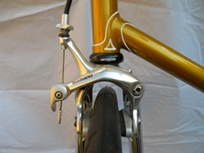
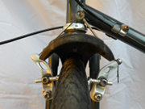
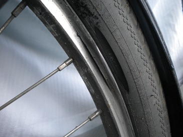
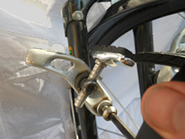
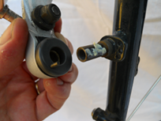

| Adjust brakes |
|
|
Kinds of Adjustment Problem B. Noisy brakes C. Brakes stick / do not spring back |
|
Brakes "do not work" in the sense of not gripping the rims for several possible reasons.
|
||||||||||||||||
|

Sidepull brakes |

Cantilever brakes |
|||||||||||||||
|
||||||||||||||||
|
A brake block "toed in" |

Pad grit scores through rim |
|||||||||||||||
Buy kit?Tools you need for this fix. |
Ads. Selected by BikeFixer | |
 |
Buy Third Hand Tool |
 |
Clean and lubricate dirty or rusty pivot: Brake arms rotate on a pivot. Over the years, this pivot may become so dirty and/or rusty that the brakes get ‘stuck’ in the 'on' position. Clean the pivot thoroughly (removing any rust with wire wool), and relubricate it.
|
||||||||||
|

Remove cantilever brake arm |

Clean and grease brake boss |
|||||||||